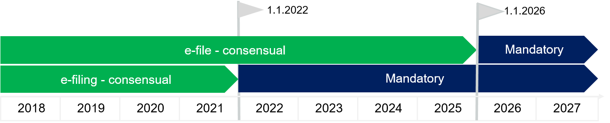

- Since January 1st, 2018 electronic documents are legally binding in Germany
- e-filing will become mandatory in Germany in just 2 years– but the implementation faces some challenges
Introduction
Since January 1st, 2018 electronic documents are legally binding in Germany as a meaning of communication between citizens, lawyers, public authorities and other parties to the proceedings in all courts of civil, labor, administrative, financial and social jurisdiction of the federal states and the federal government as well as the bailiffs (consensual e-filing) [1] Starting January 1st, 2022 in communication between professionals - such as lawyers and courts, paper documents won’t be accepted anymore in legal proceedings as legally binding (mandatory e-filing). By 1.1. 2026 e-file must be implemented by all courts in Germany and in all civil, administrative, social and criminal proceedings.[2]
Figure 1 e-justice introduction milestones in Germany 
Source: Simplified version of a timetable published by Dieter Kesper and Professor Dr. Stephan Ory (authors) in "Der zeitliche Fahrplan zur Digitalisierung von Anwaltschaft und Justiz", NJW 38/2017 2709. Color coding: green – consensual, blue - mandatory
The infrastructure enabling e-justice in Germany
The infrastructure for e-justice in Germany consists of 2 key pillars
- Secure exchange of electronic documents (including authentication and electronic signature) and
- The unified standard for legal file structure (e-file).
Technology and standards enabling a secure, legally binding exchange of electronic documents (e-filing):
- EGVP (EGVP stands for „elektronisches Gerichts- und Verwaltungspostfach - electronic mailbox for courts and government agencies[3]
- SAFE - (Secure Access to Federated e-Justice/e-Government) identity management for governmental agencies
- „beBPO“ „besonderes elektronisches Behördenpostfach“ special mailbox for government agencies
- “beA” - „besonderes elektronisches Anwaltspostfach“: special mailbox for lawyers
- “beN” - besonderes Notarpostfach: special mailbox for notary
Non-professionals may use the following methods to upload electronic documents
- A web portal: WEB-EGVP
- DE-Mail, secure email provided by 3rd party service providers such as Deutsche Telekom: (Name@t-online.de-mail.de). Please note that the use of standard (commercial) email systems is not allowed
- Any third-party product compatible with OSCI (Online Services Computer Interface) standard
- A self-developed WEB-EGVP transmitting and receiving component
- integration of the WEB-EGVP Enterprise into other specific solution developed by specialized software vendors
The unified standard for legal file structure (e-file) and file exchange format is based on the XML data exchange standard as described by XJUSTIZ.
Progress and implementation challenges
Germany is a federal state and states are free to pursue implementation of e-justice at different speeds and can either accelerate (called opt-in option) or de-accelerate the process (called opt-out option). For example, EGVP is available at all courts of the Free State of Saxony already since 2012. Since January 2018, the Saxon courts are also accessible via De-Mail. The Saxon justice system started to pilot e-file already in the ordinary jurisdiction of several civil divisions of the District Court of Dresden and in the social court in all chambers of the Social Court of Chemnitz, with the objective to meet the deadline for mandatory e-file by 31. December 2025. [4]In order to handle the implementation of the e-justice, Saxony has joined forces with the federal states of Bremen, Hesse, North Rhine-Westphalia, Saarland and the Federal Labor Court for the development of "ergonomically and electronic" or "e²" applications. The objective of the e²" approach is to deliver a computer-based working environment that is not only functional but at the same time, meets the needs of the users. The states divided the tasks among each other. The e² product suite is composed of the following software solutions:
- e-file editing environment for desktops- e²A (North Rhine-Westphalia)
- Text editing system e²T (Saxony)
- Post office management e²P (Hessen) as well as
- Courtroom booking and management system e²S (Saxony)
The components are initially used in combination with the specialist applications available in the countries. Later, the future "common technical procedure" should replace the old ones. The first area to work with the e² product is the area of civil judicial matters. The other departments and Jurisdictions will follow successively.[5] The situation looks different from the perspective of the lawyers in Germany. All lawyers admitted to the bar in Germany, are obliged to passive use of beA e.g. to accept electronic documents from courts delivered to the beA mailbox as formally delivered. Depending on the source, by the end of 2017, only 17% to 43% of lawyers in Germany were “beA” enabled e.g. ready to receive and send electronic documents to courts.[6] The implementation of the beA system faced massive challenges from the very begin. After a start in 2017, beA was shut down until September 2018 due to a lack of end to end encryption and thus security risks.
Here are some challenges documented on the BEA site
- November 29, 2019 - Problems with the authentication at the beA occur again. Restrictions on message delivery and address search. As part of the troubleshooting, it may lead to further short-term failures.
- 20. November 2019 - Sending messages without a subject may cause the recipient to get errors while retrieving the message. The web application does not allow sending messages without a subject
- Verordnung über die technischen Rahmenbedingungen des elektronischen Rechtsverkehrs und über das besondere elektronische Behördenpostfach (Elektronischer-Rechtsverkehr-Verordnung – ERVV) Source: BMJV.de
- German e-file law, BGBl.I 2017, 2208 Please note that existing paper files can be pursued on paper also after the deadline e.g. 1.1. 2026). No mandatory digitization through scanning is required.
- Source: EGVP
- EDV-Länderbericht der sächsischen Justiz zum 28. EDV-Gerichtstag 18. – 20. September 2019
- EDV Länderbericht Niedersachsen, July 2019
- 71.500 out of 165.000. Source: haufe.de According to another source: only 17% of lawyers are technically ready to send and receive electronic documents thru beA - 27.800 out of 160.000, see: NJW 38/2017 2709
The current service provider Atos will hand over the project to Westernacher Solutions GmbH and Rockenstein AG by end of this year.[7]
References
Disclaimer
Opinions or points of view expressed in this article represent the personal position of the author. This document does not constitute professional advice. The information in this document has been obtained or derived from sources believed by the author to be reliable but I don’t represent that this information is accurate or complete. Any opinions or estimates contained in this document represent a judgment at this time and are subject to change without notice.